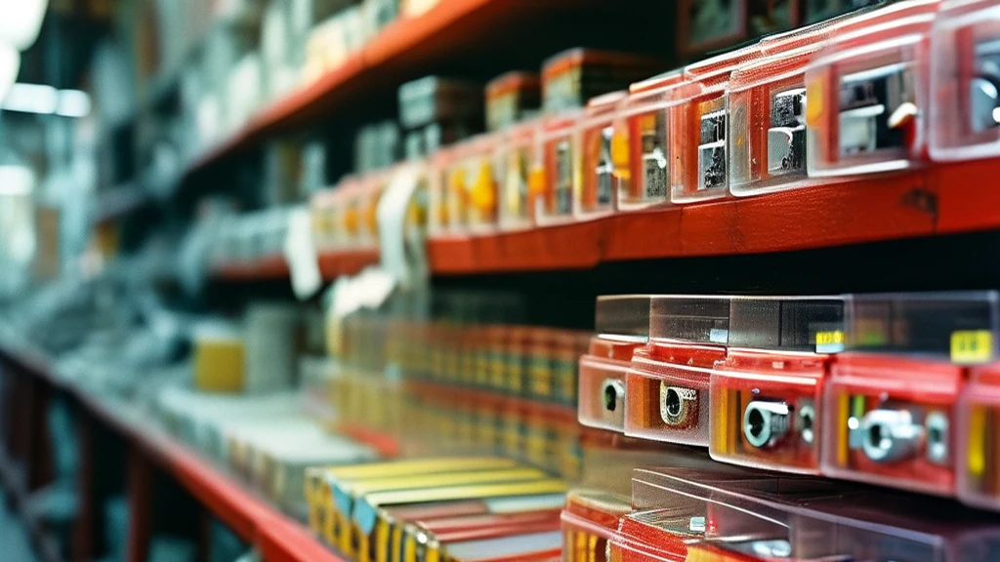
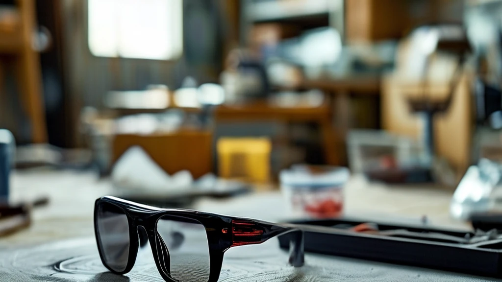
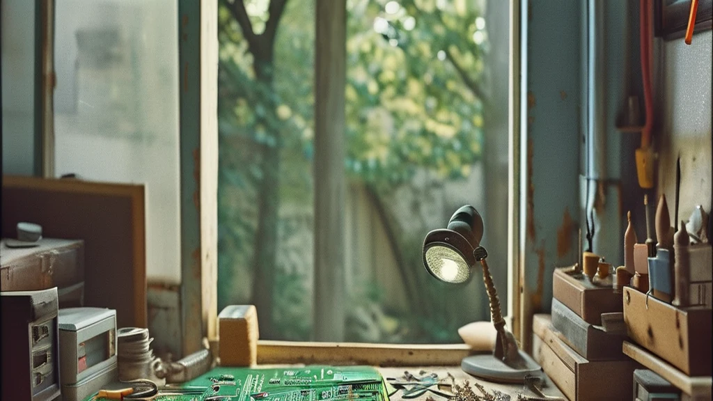
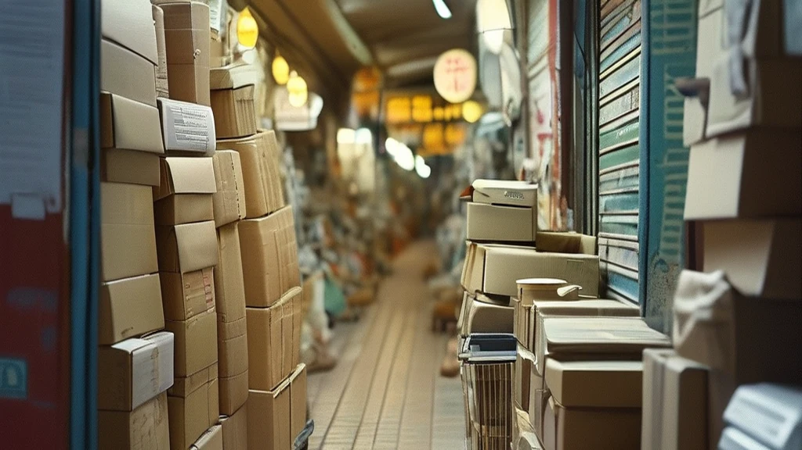
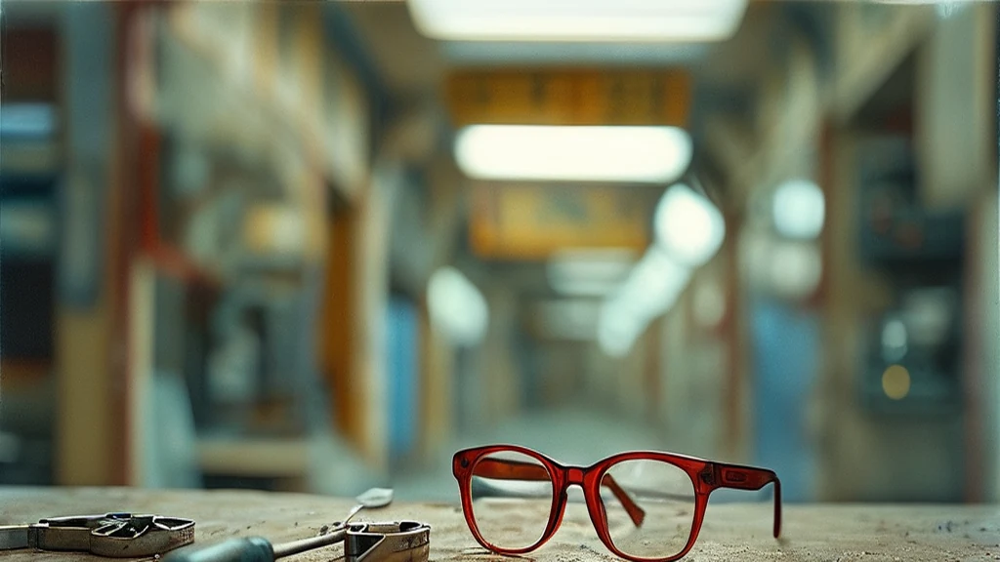

圖片由 AI輔助創作Image by AI
【鄭哥點評】欄目：鄭哥博客點評｜日期：2026-11-25
今日只有一條過得核實嘅素材，數字全部來自記者在華強北嘅現場採訪。值得寫，係因為佢一次講清兩件事：一副AI眼鏡可以一個鐘做出嚟，而呢一個鐘賺嘅錢，唔係落入賣眼鏡嘅人袋。

圖片由 AI輔助創作Image by AI
一、一小時、四百蚊：一副眼鏡點樣誕生
深圳華強北。一名外國遊客行入市場，提出一個很具體的要求：一副可以拍照、可以實時翻譯嘅AI眼鏡，預算唔超過400蚊。一個鐘之後，佢戴住呢副眼鏡走咗。
做呢件事嘅人叫周家豪，一間智能體公司嘅負責人。佢冇由零開始畫圖，而係用AI去搵現成方案，幾分鐘生成一張物料清單，當場在線下單。之後係騎手分頭衝入唔同嘅電子市場，把芯片、攝像頭模組、電池分別交到工程師手上，組裝、調試，然後戴上。
我特別留意「騎手」呢一環。呢副眼鏡嘅關鍵唔在設計，而在現貨：芯片、模組、電池今日就擺喺隔離幾條街嘅櫃位度。設計可以係軟件問題，交付係物流問題，而華強北把物流壓縮到以分鐘計——呢個係整件事最唔容易複製嘅部分。
來源：21世紀經濟報道｜https://m.21jingji.com/article/20261118/herald/fad85a7a5b7cdbfa259582ea7e5275fb.html

圖片由 AI輔助創作Image by AI
二、錢喺邊一環消失：開板、打樣、小單
400蚊呢個預算，其實已經決定咗錢點樣分配。一副眼鏡嘅成本結構大概分四塊：芯片同模組等物料、開板同打樣、組裝調試嘅人工，以及量產之後才出現嘅認證同售後。報道裡面有個關鍵對比：過去單獨開板要五六百蚊、等一個星期；而家部分打樣訂單20蚊、最快12個鐘出貨。
五六百蚊，等於一副眼鏡嘅全部預算；20蚊，只佔400蚊嘅二十分之一。同一件事價錢跌咗一個數量級，意義唔止係便宜：試錯由一個要開會拍板嘅投資，變成一個可以即場做嘅動作。硬件創業最貴嘅從來唔係物料，係「唔知行唔行」嘅那段等待。
第二個數字係「小單也有人接，幾百件就能談」。以前開模按千件萬件計，小團隊連入場資格都冇；而家幾百件可以談，由樣品到量產兩星期定案。省落嚟嘅唔止係錢，係「唔需要一次押重注」——你可以先做一百件，賣完再講。呢一點，比任何補貼都實際。
來源：21世紀經濟報道｜https://m.21jingji.com/article/20261118/herald/fad85a7a5b7cdbfa259582ea7e5275fb.html

圖片由 AI輔助創作Image by AI
三、1.45平方公里嘅護城河
華強北只有大約1.45平方公里，卻擠住35家專業市場，可以採購嘅電子元器件超過一百萬種。日均包裹量超過300萬件；今年以來日均到訪外籍客商超過8000人次，高峰超過1萬人次。
呢幾個數字放埋一齊，你就明白為咩一個鐘做得到：35家市場等於一個實體嘅零件庫，100萬種元器件等於庫存深度，300萬件包裹等於每日練出嚟嘅物流肌肉。呢三樣嘢，任何一間公司自己建，都要用好多年同好多錢。
所以呢門生意嘅護城河唔喺某一副眼鏡，而喺密度。抄一副眼鏡好容易，圖紙、物料清單、組裝步驟，一個下午就傳開；但抄一個行五分鐘就能湊齊芯片同模組嘅1.45平方公里，幾乎冇可能。呢個亦解釋咗為咩外籍客商要親自飛過嚟——佢哋買嘅唔係眼鏡，係呢一個鐘。
來源：21世紀經濟報道｜https://m.21jingji.com/article/20261118/herald/fad85a7a5b7cdbfa259582ea7e5275fb.html

圖片由 AI輔助創作Image by AI
四、鄭哥點評：呢門生意值不值得學
先講錢被邊個賺走。呢一個鐘裡面，真正收錢嘅唔係賣眼鏡嘅人：400蚊嘅預算，扣芯片、模組、電池、組裝，剩返嘅利潤極薄；而開板廠、打樣舖、櫃位檔主、跑腿騎手，每一環都收一次現金，而且唔使承擔賣唔出嘅風險。換句話講，客人付嘅400蚊，大部分係買現貨嘅便利，唔係買設計。硬件行業嘅錢，長期留在「把圖紙變成實物」嘅那一環，唔係留在品牌。
最值得學嘅，係周家豪嘅做法：用AI把方案檢索同物料清單壓縮到幾分鐘，然後把交付交返給現貨市場。小團隊唯一現實嘅產品開發方式，就係唔自己建能力，而係調用現有能力。最唔值得學嘅，係「400蚊賣一副AI眼鏡」呢個價位本身：要拍照、要實時翻譯，400蚊零售價之下，物料、組裝、售後全部要壓到極致，又冇軟件月費、冇配件複購，等於替供應鏈打工。同一副眼鏡，如果賣嘅係翻譯服務嘅月費，錢才會留在自己手裡。
所以給一條可以即用嘅判斷：打樣費加分攤模具費，佔售價超過兩成就唔應該做呢門硬件。今日20蚊打樣、幾百件起訂，呢條線過得去；一旦要自己開模、要等一個星期、要按千件起訂，你嘅現金就會卡在模具裡面，賣唔完嘅貨變成利息。第二條更硬：算清楚售後同退換佔毛利幾成——電子產品嘅維修係按月發生，唔係一次性。兩條線都過得去，才輪到講品牌同渠道。過唔去，你唔係做產品，係替模具廠同檔口集資。
圖片由 AI輔助創作Image by AI
\[Zheng Ge's Take\] Column: Zheng Ge's blog commentary | Date: 2026-11-25
Only one item survives verification today, and every figure in it comes from a reporter's visit to Huaqiangbei. It is worth writing because it settles two questions at once: a pair of AI glasses can be built in an hour, and the money made in that hour does not go to the person who sells the glasses.
圖片由 AI輔助創作Image by AI
1. One hour, four hundred yuan: how a pair of glasses gets built
Huaqiangbei, Shenzhen. A foreign visitor walked into the market with a very concrete request: AI glasses that take photos and translate in real time, budget no more than 400 yuan. An hour later he left wearing them.
The man who did it is Zhou Jiahao, who runs an AI agent company. He did not start from a blank drawing; he used AI to find an existing design, generated a bill of materials in minutes and ordered on the spot. Couriers then ran into different electronics markets, delivering chips, camera modules and batteries into engineers' hands to assemble, test and wear.
The courier step is the one I keep looking at. What made the glasses possible was not design but stock: the chips, modules and batteries were sitting in stalls a few streets away that same day. Design can be a software problem, delivery is a logistics problem, and Huaqiangbei compresses logistics into minutes.
Source: 21世紀經濟報道 | https://m.21jingji.com/article/20261118/herald/fad85a7a5b7cdbfa259582ea7e5275fb.html
圖片由 AI輔助創作Image by AI
2. Where the money goes: tooling, prototyping, small batches
The 400-yuan budget already decides how the money is split. A pair of glasses has four cost blocks: chips and modules, tooling and prototyping, assembly labour, and the certification and after-sales that only appear at volume. The report gives one key comparison: a one-off board run used to cost five or six hundred yuan and take a week; some prototype orders now cost 20 yuan and ship within twelve hours.
Five hundred yuan was the entire budget for the glasses; 20 yuan is one twentieth of 400. The price fell by an order of magnitude, and the meaning is not just cheapness: trial and error turns from an investment requiring a meeting into something you can do on the spot. The most expensive part of hardware has never been materials; it is the waiting while nobody knows whether the thing works.
The second number is that small orders are accepted, with a few hundred units enough to negotiate. Moulds used to be quoted in thousands and tens of thousands, which shut small teams out entirely; now a few hundred is discussable, and sample to volume is settled in two weeks. What that saves is not only cash but the obligation to bet everything at once - you can make a hundred first and talk after they sell.
Source: 21世紀經濟報道 | https://m.21jingji.com/article/20261118/herald/fad85a7a5b7cdbfa259582ea7e5275fb.html
圖片由 AI輔助創作Image by AI
3. A moat 1.45 square kilometres wide
Huaqiangbei covers only about 1.45 square kilometres yet packs in 35 specialist markets where more than a million kinds of electronic components can be bought. Parcel volume tops three million a day; since the start of this year foreign buyers have averaged more than eight thousand visits a day, peaking above ten thousand.
Put those numbers together and the one-hour build stops being a mystery: 35 markets are a physical parts library, a million component types are inventory depth, three million parcels a day are logistics muscle trained daily. Any single company building that for itself would need years and a great deal of money.
So the moat here is not any one pair of glasses but density. Copying glasses is easy - drawings, bill of materials, assembly steps travel in an afternoon. Copying 1.45 square kilometres where a five-minute walk gathers every chip and module is close to impossible. It also explains why foreign buyers fly in: what they are buying is not the glasses, it is that hour.
Source: 21世紀經濟報道 | https://m.21jingji.com/article/20261118/herald/fad85a7a5b7cdbfa259582ea7e5275fb.html
圖片由 AI輔助創作Image by AI
4. My take: is this a business worth copying
Start with who actually gets paid. In that hour it is not the seller of the glasses: from a 400-yuan budget, after chips, modules, batteries and assembly, the margin left is razor thin, while the board shop, the prototyping house, the stall holders and the couriers each take cash and carry none of the risk of unsold stock. Most of the customer's 400 yuan buys the convenience of stock on hand, not design. In hardware the money stays with whoever turns drawings into objects, not with the brand.
What is worth learning is Zhou Jiahao's method: use AI to compress design search and the bill of materials into minutes, then hand delivery to the spot market. For a small team the only realistic way to develop a product is not to build capability but to rent it. What is not worth learning is the price point itself - shooting photos and translating live at a 400-yuan retail price forces materials, assembly and after-sales to the bone, with no software subscription and no accessory repeat purchase. That is working for the supply chain. The same glasses sold with a monthly translation fee would keep the money at home.
So here is a rule I would actually use: if prototyping plus amortised tooling exceeds twenty per cent of the retail price, do not make this hardware. At 20 yuan a prototype and a few hundred units minimum, the line holds; the moment you need your own mould, a week of waiting and a thousand-unit minimum, your cash is stuck inside the tool and unsold stock becomes interest. A harder second line: work out after-sales and returns as a share of gross margin - electronics fail monthly, not once. Clear both and then talk about brand and channel. Fail either and you are not making a product, you are crowdfunding for the mould shop and the stalls.